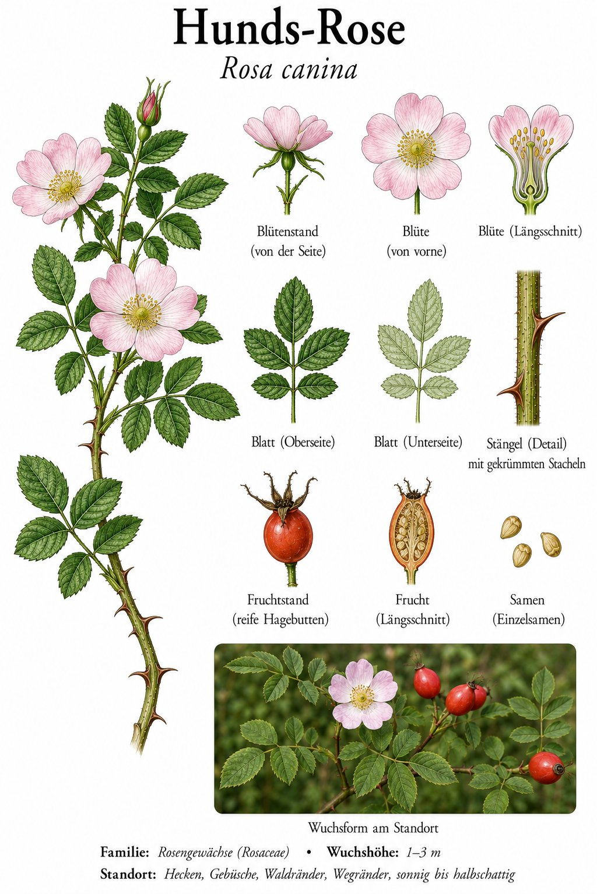
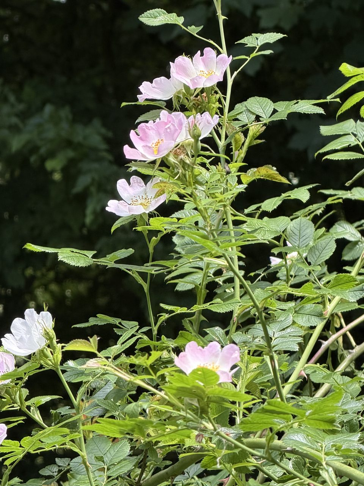

Die wilde Ahnin unserer Gartenrosen — und Lieferantin von Juckpulver.


Fünf Blätter, ein Duft
Die Hundsrose blüht zart rosa bis weiß, mit nur fünf einfachen Blütenblättern und einem Büschel goldener Staubblätter in der Mitte. Aus solchen schlichten Wildrosen wurden über Jahrhunderte die gefüllten Gartenrosen gezüchtet. Ihre bogigen, bestachelten Triebe bilden dichte Hecken — Schutz und Nistplatz für viele Vögel.
Hagebutten: Vitaminbombe und Kinderstreich
Im Herbst reifen die roten Hagebutten, die mehr Vitamin C enthalten als Zitronen — als Mus, Tee oder „Hiffenmark“ geschätzt. In ihrem Inneren sitzen feine Härchen, die als „Juckpulver“ Generationen von Schulkindern Streiche ermöglicht haben. Botanisch ist die Hagebutte übrigens keine Frucht, sondern ein fleischig gewordener Blütenbecher.
Wissenswertes & Merksätze
Erkennungszeichen
Bis 3 m hoher Strauch mit bogigen Trieben und kräftigen, gekrümmten Stacheln; unpaarig gefiederte Blätter; einfache, fünfzählige rosa Blüten; rote, eiförmige Hagebutten.
Warum „Hunds“-Rose?
Die Vorsilbe „Hunds-“ galt früher als abwertend — „nur eine ganz gewöhnliche Rose“. Andere führen den Namen auf einen alten Glauben zurück, die Wurzel helfe gegen den Biss tollwütiger Hunde. Bewiesen wurde das nie, der Name blieb trotzdem hängen.